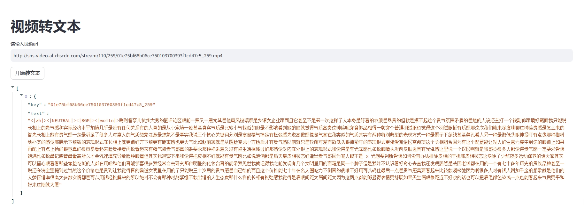

本地部署视频转文字模型
背景
获取品牌资产种草的作品，对应的视频、图片、文本的内容，根据这些内容判断种草的作品是否合格
环境准备
- ubuntu（我的），也支持 windows，macOS
- python（我用的 python12）
- 依赖包
1
2
3
4
5
6
7
8
9
10
11
12
13
14
15
16
17
18
19
20
21
22
23
24
25
26
27
28
29
30
31
32
33
34
35
36
37
38
39
40
41
42
43
44
45
46
47
48
49
50
51
52
53
54
55
56
57
58
59
60
61
62
63
64
65
66
67
68
69
70
71
72
73
74
75
76
77
78
79
80
81
82
83
84
85
86
87
88
89
90
91
92
93
94
95
96
97
98
99
100
101
102
103
104
105
106
| addict==2.4.0
aiohappyeyeballs==2.4.6
aiohttp==3.11.12
aiosignal==1.3.2
aliyun-python-sdk-core==2.16.0
aliyun-python-sdk-kms==2.16.5
altair==5.5.0
antlr4-python3-runtime==4.9.3
attrs==25.1.0
audioread==3.0.1
blinker==1.9.0
cachetools==5.5.1
click==8.1.8
crcmod==1.7
datasets==3.3.0
decorator==5.1.1
dill==0.3.8
editdistance==0.8.1
filelock==3.17.0
frozenlist==1.5.0
fsspec==2024.12.0
funasr==1.2.4
gitdb==4.0.12
GitPython==3.1.44
huggingface-hub==0.28.1
hydra-core==1.3.2
jaconv==0.4.0
jamo==0.4.1
jieba==0.42.1
Jinja2==3.1.5
jmespath==0.10.0
joblib==1.4.2
jsonpointer==2.1
jsonschema==4.23.0
jsonschema-specifications==2024.10.1
kaldiio==2.18.0
lazy_loader==0.4
librosa==0.10.2.post1
llvmlite==0.44.0
MarkupSafe==3.0.2
modelscope==1.22.3
mpmath==1.3.0
msgpack==1.1.0
multidict==6.1.0
multiprocess==0.70.16
narwhals==1.26.0
networkx==3.4.2
numba==0.61.0
numpy==2.1.3
nvidia-cublas-cu12==12.4.5.8
nvidia-cuda-cupti-cu12==12.4.127
nvidia-cuda-nvrtc-cu12==12.4.127
nvidia-cuda-runtime-cu12==12.4.127
nvidia-cudnn-cu12==9.1.0.70
nvidia-cufft-cu12==11.2.1.3
nvidia-curand-cu12==10.3.5.147
nvidia-cusolver-cu12==11.6.1.9
nvidia-cusparse-cu12==12.3.1.170
nvidia-cusparselt-cu12==0.6.2
nvidia-nccl-cu12==2.21.5
nvidia-nvjitlink-cu12==12.4.127
nvidia-nvtx-cu12==12.4.127
omegaconf==2.3.0
oss2==2.19.1
pandas==2.2.3
pillow==11.1.0
pooch==1.8.2
propcache==0.2.1
protobuf==5.29.3
pyarrow==19.0.0
pycryptodome==3.21.0
pydeck==0.9.1
pynndescent==0.5.13
python-dateutil==2.9.0.post0
pytorch-wpe==0.0.1
pytz==2025.1
PyYAML==6.0.2
referencing==0.36.2
rpds-py==0.22.3
scikit-learn==1.6.1
scipy==1.15.2
sentencepiece==0.2.0
setuptools==75.8.0
simplejson==3.20.1
six==1.17.0
smmap==5.0.2
sortedcontainers==2.4.0
soundfile==0.13.1
soxr==0.5.0.post1
streamlit==1.42.0
sympy==1.13.1
tenacity==9.0.0
tensorboardX==2.6.2.2
threadpoolctl==3.5.0
toml==0.10.2
torch==2.6.0
torch-complex==0.4.4
torchaudio==2.6.0
tornado==6.4.2
triton==3.2.0
tzdata==2025.1
umap-learn==0.5.7
watchdog==6.0.0
wheel==0.45.1
xxhash==3.5.0
yarl==1.18.3
|
代码实现
实现方式：本地部署了魔搭平台上的【SenseVoice 多语言语音理解模型 Small（https://www.modelscope.cn/models/iic/SenseVoiceSmall）】模型
1
2
3
4
5
6
7
8
9
10
11
12
13
14
15
16
17
18
19
20
21
22
23
24
25
26
27
28
29
30
31
32
33
34
35
| from modelscope.pipelines import pipeline
from modelscope.utils.constant import Tasks
import streamlit as st
def video_to_text(video_url):
inference_pipeline = pipeline(
task=Tasks.auto_speech_recognition,
model='iic/SenseVoiceSmall',
model_revision="master",
device="cuda:0",)
rec_result = inference_pipeline(video_url)
return rec_result
st.title('视频转文本')
video_url = st.text_input('请输入视频url')
if st.button('开始转文本'):
with st.spinner('正在转文本...'):
rec_result = video_to_text(video_url)
st.write(rec_result)
|
效果展示

遇到的问题
No such file or directory: ‘ffmpeg’
安装 FFmpeg:
- Windows:
- 下载 FFmpeg Windows 版本（ZIP 文件），链接可以从官方网站获取：https://ffmpeg.org/download.html。
- 解压下载的文件到一个目录，例如
C:\ffmpeg。
- 将
C:\ffmpeg\bin 添加到系统的环境变量 PATH 中：
- 右键点击“此电脑”或“我的电脑”，选择“属性”。
- 选择“高级系统设置”，然后点击“环境变量”。
- 在“系统变量”中找到
Path，然后点击“编辑”。
- 点击“新建”，并输入 FFmpeg 的 bin 目录路径。
- MacOS:
- 使用 Homebrew 安装 FFmpeg。如果你没有 Homebrew，先通过
/bin/bash -c "$(curl -fsSL https://raw.githubusercontent.com/Homebrew/install/HEAD/install.sh)" 安装它。
- 运行命令
brew install ffmpeg。
- Linux:
- 对于大多数基于 Debian 的系统，可以使用命令
sudo apt update 然后 sudo apt install ffmpeg。
- 对于基于 Red Hat 的系统，可以使用命令
sudo yum install ffmpeg 或者通过启用 RPM Fusion 仓库后安装。
验证安装:
- 运行命令
ffmpeg -version 来验证 FFmpeg 是否正确安装和配置。如果安装成功，你应能看到 FFmpeg 的版本信息输出。
完成这些步骤后，重新运行你的程序，ffmpeg 应该能被正确识别并执行。如果你在设置 PATH 时遇到问题，请确保已经正确输入了路径且保存了更改。